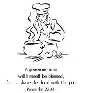
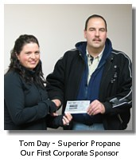
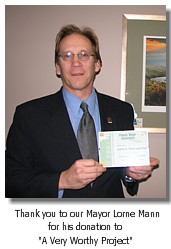

Restaurants
Peace Country Co-OpSunflower Cafe
Peace River Subway
Rusty's @ BCMI
Smitty's @ PVI
Summit Restaurant @ WBM
Peace River Tim Hortons
IGA Deli
Traveller's Hotel
Individual Sponsors
The following people have participated generously in our sponsorship program:
Myrna Makkonen
Wayne & Annette Wiebe
Connie Eddy
Scott & Tobi Cawthra
Betty Holmes
Tammy Buker
Wanda Fithen
Richard Lanctot
Charles Lacelle
Dan Watt
This program is just getting under way... please see our "Donations" page for details on how to get involved.
Without the support of the entire community, the soup kitchen would not be possible.
We would like to express our heart felt thanks to those who so enthusiastically lent their support.
Local businesses, churches, individuals and organizations have provided funding, volunteer help and supplies.
participation in this initiative.
Organizations
The following organizations have contributed to the founding of the soup kitchen in terms of developing, organizing, supporting and promoting the program:
Peace Association for Lifelong Learning (PAL)Peace Country Health
A Group of Concerned Citizens
Peace Country Development Corp.
Town of Peace River
Become a Gold Sponsor of the Soup Kitchen >>
Corporate Sponsors
 Superior PropaneFountain Tire, Peace River
Grimshaw Rotary Club
Dr. David T. Blench DDS
Our Lady of Peace Parish
Boucher Bros. Lumber Ltd.
Finning (Canada)
Fitness on the Go Ltd.
Cote Bliss Bozarth Wright
Mainstreet Menswear
Dad's n Lad's Clothing
Royal Lepage Casey Realty & Casey Insurance
Meyers Norris Penny LLP
Just Imagine Interior Decor
DMI Peace River Pulp Division
Bumper to Bumper
P.R. AUPE Area Council
Lorne G. Mann Law Firm
Best Truck Service
Baytex Energy Ltd.

Thank You to the Following Churches for Your Involvement:
|
Alliance Church P.O. Box 6988 Peace River, Alberta T8S 1S7 780-624-1202 |
First Baptist Church 8602 - 98th Street Peace River, Alberta T8S 1G4 780-624-2611 |
St. James Anglican Cathedral 9709 - 98th Avenue Peace River, Alberta T8S 1E1 780-624-2743 |
| City On A Hill 10301-100th Street Peace River, Alberta |
The Salvation Army 9710-74 Ave Peace River, Alberta T8S 1G4 780-624-2370 |
St. Paul's United Church 10009 - 102nd Street Peace River, Alberta T8S 1R7 780-624-2615 |
|
Victory Church of the Peace #15, 9403 - 94 Street Peace River, Alberta T8S 1J2 780-624-2246 |
Seventh Day Adventist Church 9812 - 98th Street Peace River, Alberta T8S 1J5 780-624-8047 |
Our Lady of Peace Catholic Church 10405 - 99th Street Peace River, Alberta T8S 1M4 780-624-2635 |
 prsoupkitchen.org
prsoupkitchen.org